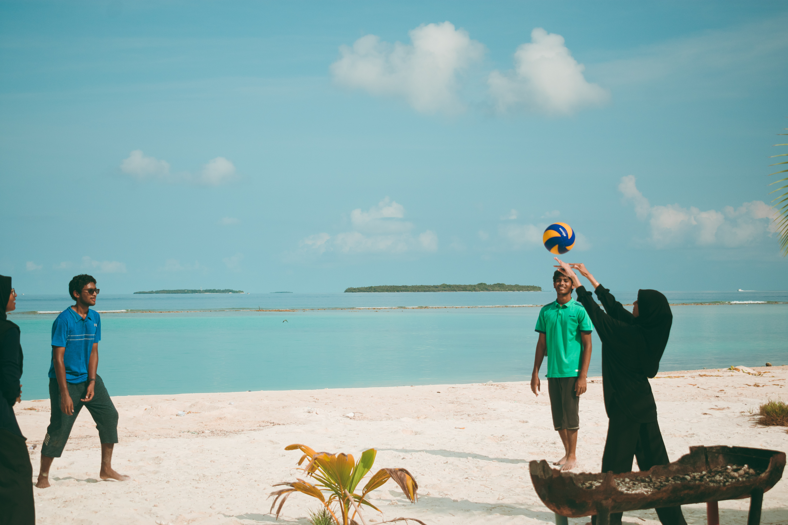
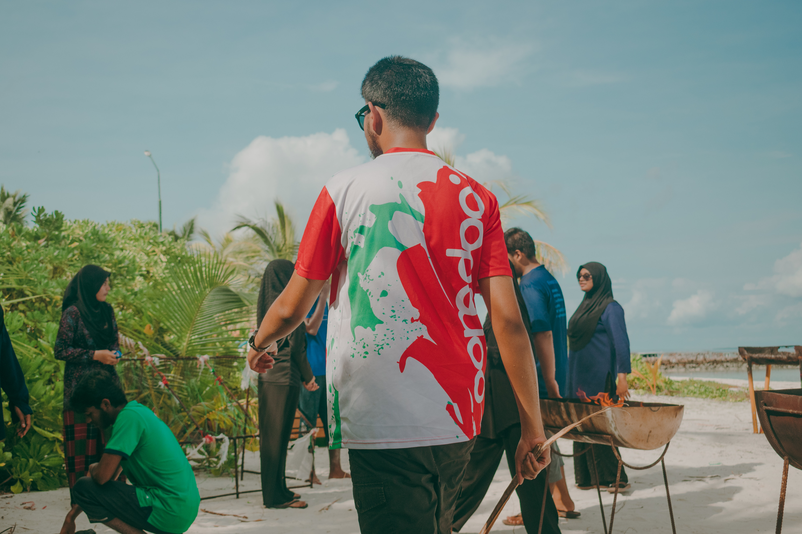
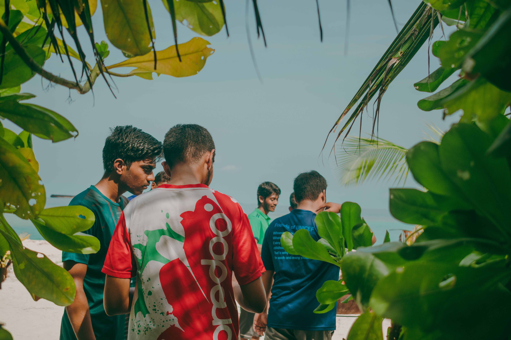
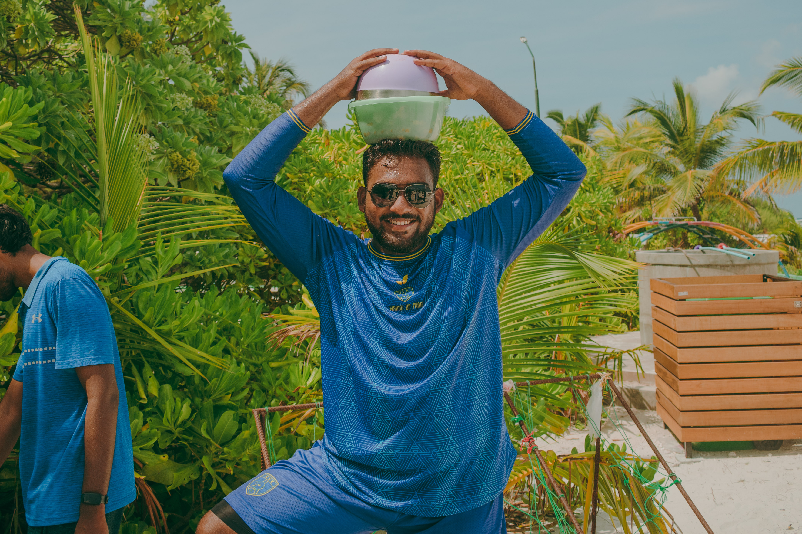

The nukiyavaakudhin ventured off into the wilderness for another bbq. However this time the chosen location was on the opposite end of the island: thari park!
The variety of food that was being prepared consisted of chicken, sausages and garlic bread. In addition to this, we also got a lovely refresher of kulfi in the middle, which was enjoyed very much by all
Many photos, food, and impromptu volley matches later, we then headed off to the Sea
Yes, we went moodhah
Only to find out that half the population doesn't know how to swim
But despite this minor setback, we had loads of fun at the moodhu, and deffo made fond memories to look back on
Link to the photos:
https://photos.app.goo.gl/WKNAanjV2GMsvFQz6